Tall Tales Storytelling App
Children’s digital experiences are dominated by consumption. This project asks what happens when you flip that: when a tablet becomes a place where a child authors something, rather than receives it.
- Type
- UX design · Interactive storytelling · Child-centred design
- Made at
- BrainStation
- Tools
- Figma, FigJam, Miro
- Methods
- User interviews, personas, information architecture, wireframing
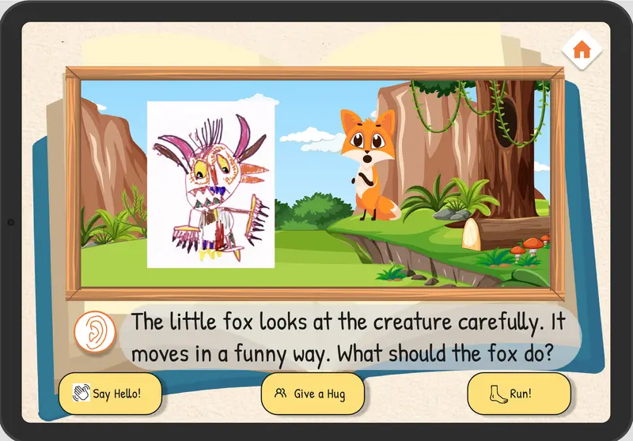
01Context
Tall Tales is an iPad storytelling app for children ages 5 to 7 that turns screen time into active story-making. Using a “choose your own adventure” branching system inspired by narrative-driven games, children shape their own narratives through decisions, not just taps.
They draw characters and settings by hand from a set of simple templates, scan them in and watch their drawings animate inside the story world. With audio, touch and minimal text, the experience supports early readers and encourages unique creative expression, a new story with each play and repeat play. The result belongs to them: a downloadable storybook, a small authored thing.
02Problem space
Most children’s apps emphasize entertainment and reward loops over creative exploration or authorship, so children rarely produce anything meaningful that extends beyond the screen.
This project reintroduces narrative agency and storyworld creation into digital play. Drawing from interactive fiction principles such as branching narratives and player-driven choice, children’s drawings and decisions become the building blocks of their own evolving worlds: pieces of art that carry both play value and personal meaning.
03Starting with how children play
Before building anything, the work started with kids. I interviewed children ages 5 to 7 using a defined interview script, and close attention to their developmental stage shaped every decision. Children at this age understand cause and effect, they’re in the middle of fantasy play and they have an embodied relationship with screens: they expect things to respond to them, to come alive under their fingers.
Three personas emerged: Isla, who wants to make something and show it to people; Kareem, who wants to test every button to see what breaks; and Asha, who moves slowly and needs the experience to feel safe and unhurried. The app was designed to hold all three.

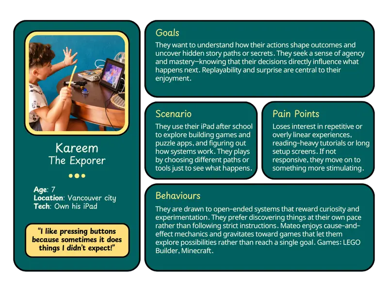
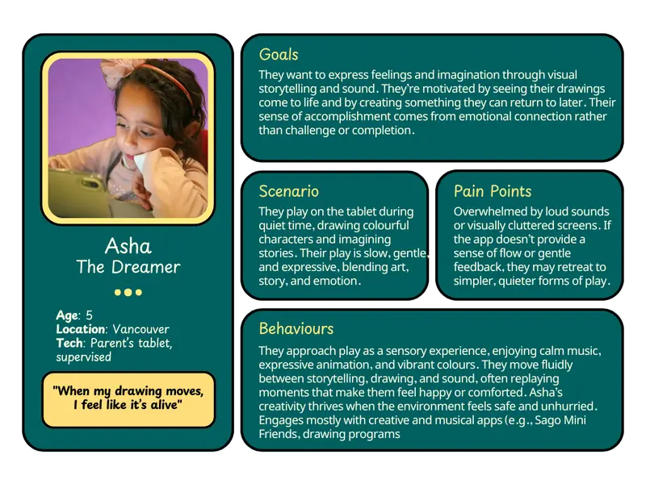
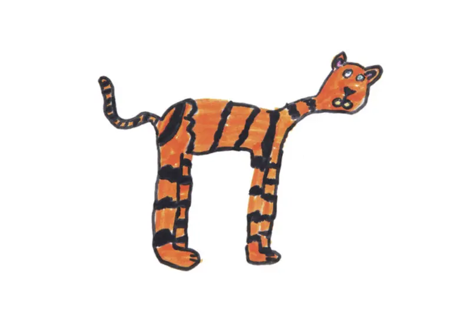
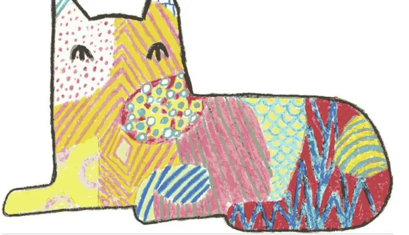
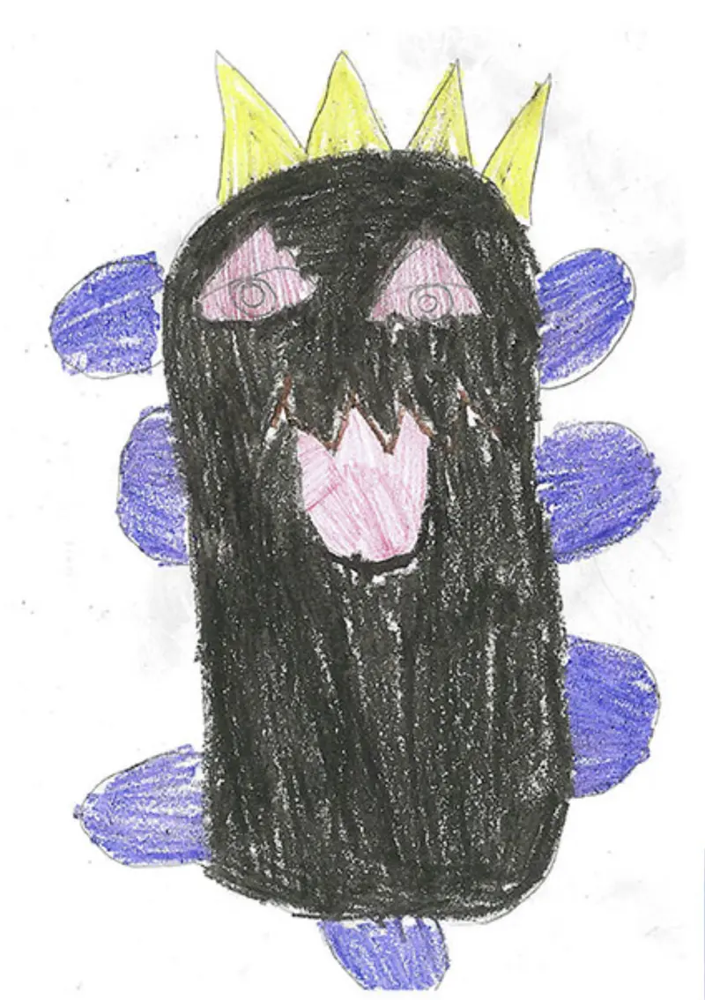
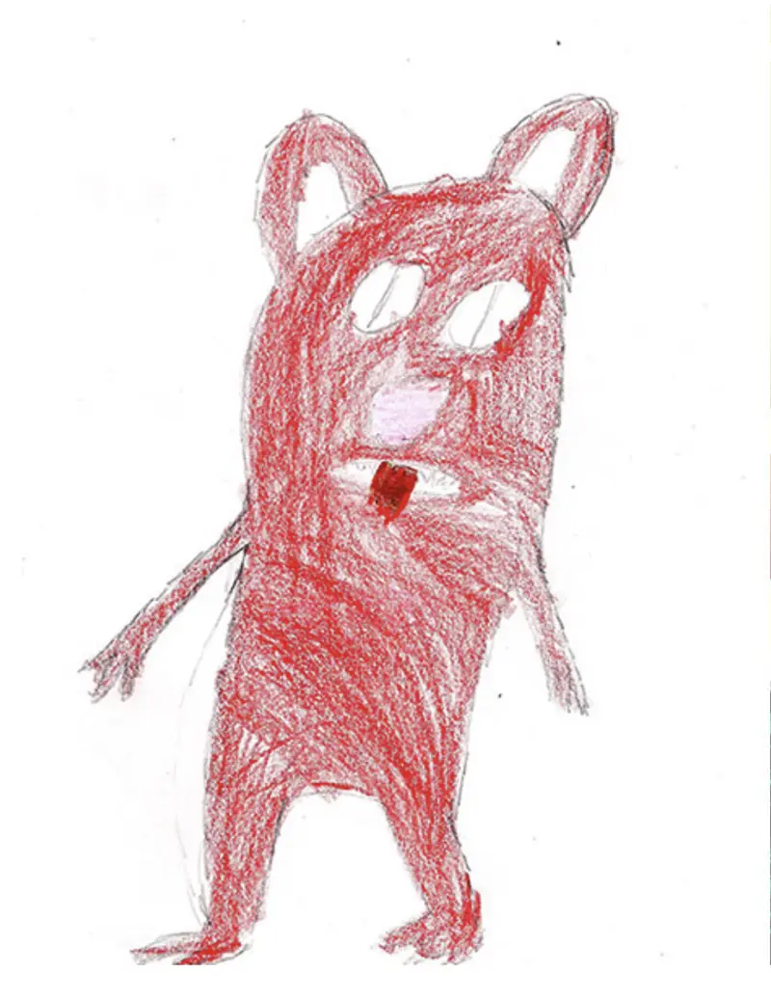
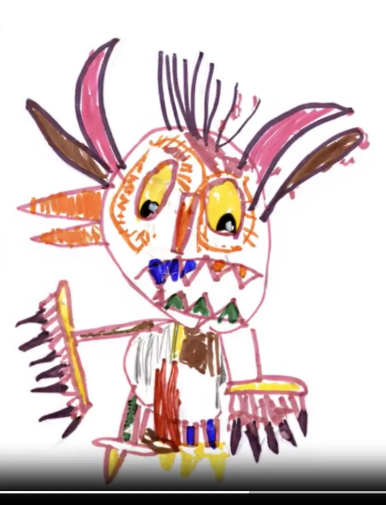
Drawings made from the character templates, ready to scan into the story.
04Structure
The information architecture is organized into colour-coded sections: green for the homepage, yellow for story sections, orange for drawing prompts and blue for story blocks. The experience is built around six story moments, each a place where the child’s choice genuinely changes what happens next.
Early ideation and task flows were sketched by hand, then digital wireframes tested the user flow without the distraction of colour or animation. They were designed to communicate without words, a discipline that made the design cleaner and more intuitive with each iteration.
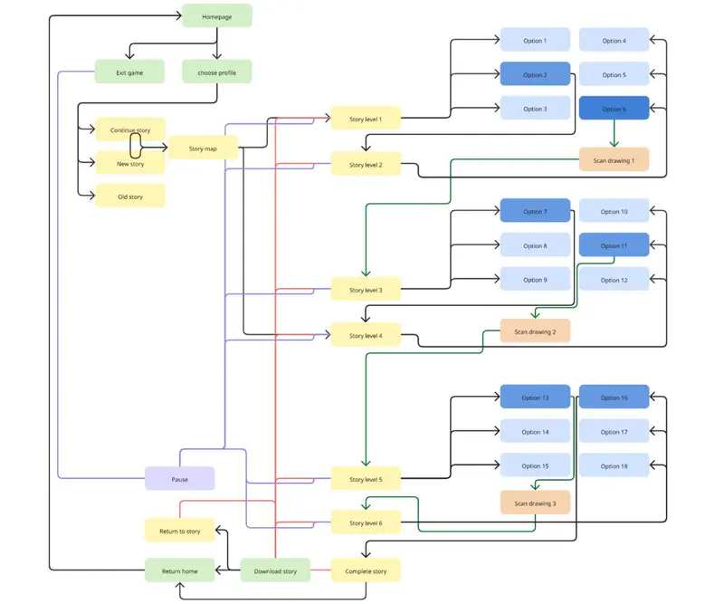
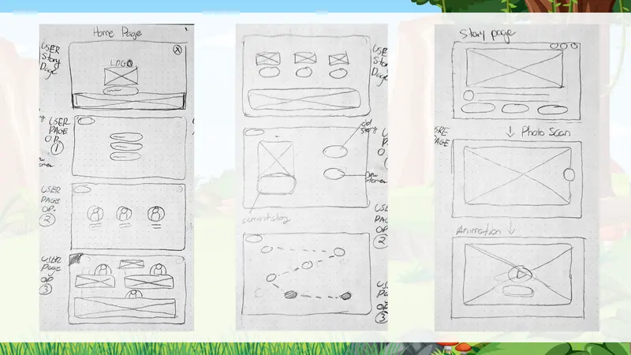
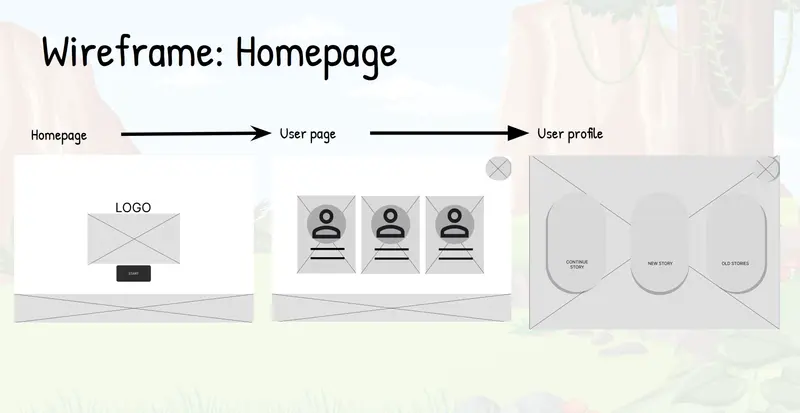
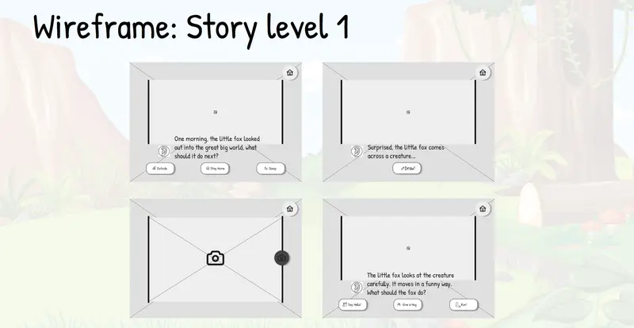
05Design decisions
Children don’t lose interest because they’re bored; they lose interest when they lose agency. They value ownership of their stories over completing them, and care about making something special and naming it. So every branch in the story is a real decision, with a consequence the child can feel.
Children also treat an app as an extension of their own bodies: tap something to wake it up, drag a finger to move an object, swipe to turn a page. The scan-and-animate feature gives physical drawing a digital life, bridging the two kinds of play rather than choosing between them. Navigation relies on icons and audio, not text, so early readers aren’t left behind.
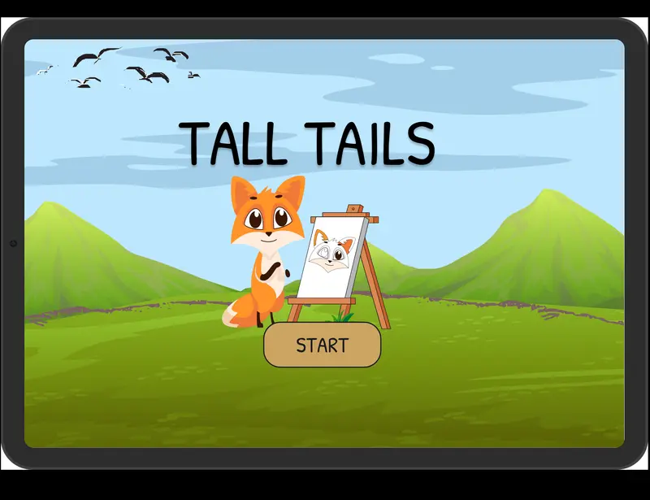
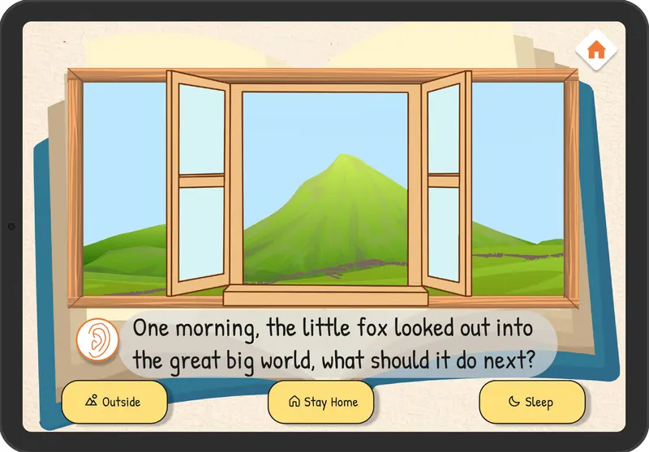
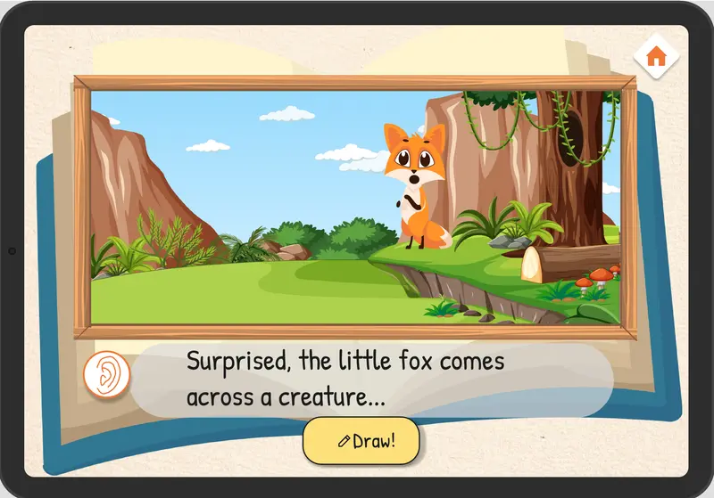
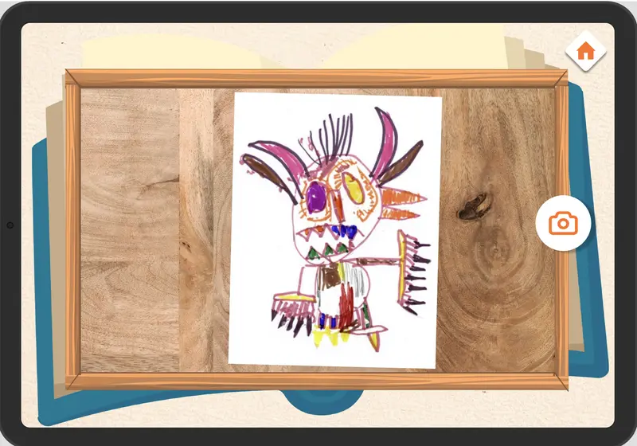
A short walkthrough of the clickable prototype. Open the Figma prototype ↗
06What I learned
Designing for children means designing for a radically different cognitive model: limited reading, shorter attention spans and a relationship to objects that is physical and immediate rather than abstract. Creating wireframes that rely on symbols and gestures rather than instructions was a real learning curve, and an interesting one.
The part I’d keep developing is the story itself. A good story developer, and an illustrator who can meet children’s drawings inside a coherent visual world: that collaboration is where the app would really come alive. The downloadable storybook at the end feels like where the lasting meaning would live.
The app is a prototype and could be developed further.